Less untangling. More science.
NOAA Fisheries AFSC
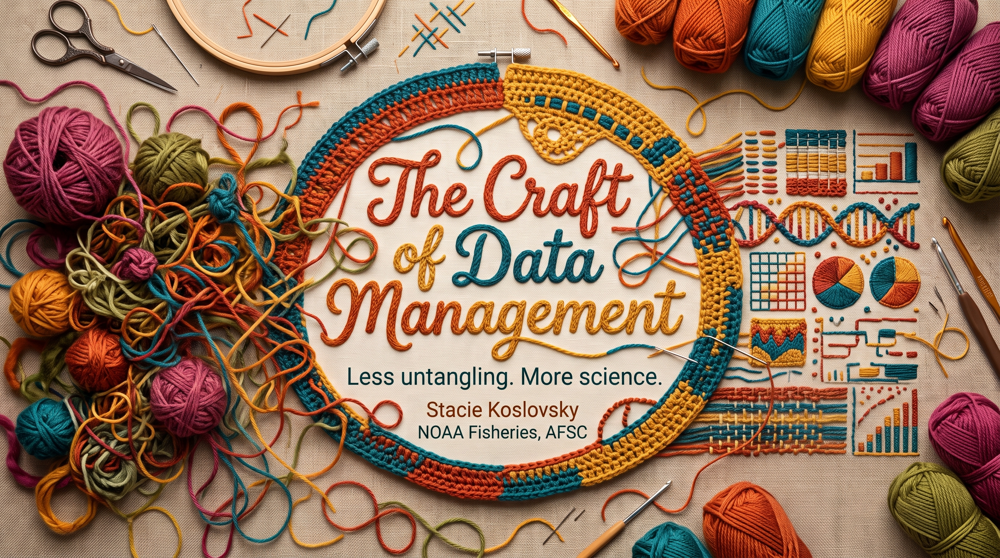
┌────────────────────────────────────────────────────────┐
│ 1. GOVERNANCE & BLUEPRINT │
│ Data Architect • Governance Analyst │
└───────────────────────────┬────────────────────────────┘
│ (Designs the system & rules)
▼
┌────────────────────────────────────────────────────────┐
│ 2. THE RAW FOUNDATION │
│ Data Engineer │
└───────────────────────────┬────────────────────────────┘
│ (Moves & structures raw data)
▼
┌────────────────────────────────────────────────────────┐
│ THE STORAGE HUB │
└─────────────────┬───────────────────┬──────────────────┘
│ │
(For Exploration & ML) │ │ (For Clean Business Data)
▼ ▼
┌───────────────────────────┐ ┌───────────────────────────┐
│ 4A. PREDICTIVE MATH │ │ 4B. DESCRIPTIVE TRENDS │
│ Data Scientist (1560) │ │ Data Analyst │
│ (Builds & tests models) │ │ (Builds dashboards/KPIs) │
└─────────────┬─────────────┘ └─────────────┬─────────────┘
│ │
(Needs Production) (Needs Business Context)
▼ ▼
┌───────────────────────────┐ ┌───────────────────────────┐
│ 5A. DEPLOYMENT & AI │ │ 5B. STRATEGY & ROI │
│ ML Engineer (1560) │ │ Business Analyst │
│ (Deploys code into apps) │ │ (Translates to executive) │
└───────────────────────────┘ └───────────────────────────┘Organize your supplies
Start a new project
Not necessarily a data project.
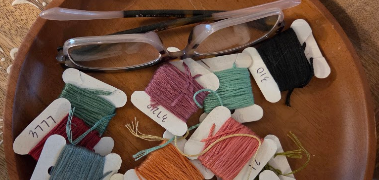
DISCUSSION: What is your tangled project?
You sit down to make something—but first:
In Research
Find the file. Decode the columns. Locate the script. Reconstruct the result.
Good data management helps us:
A gift to future-you—and whoever comes next.
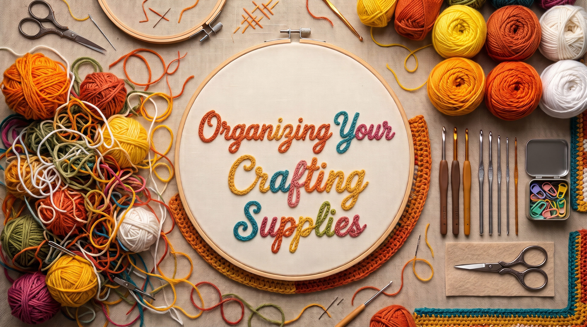
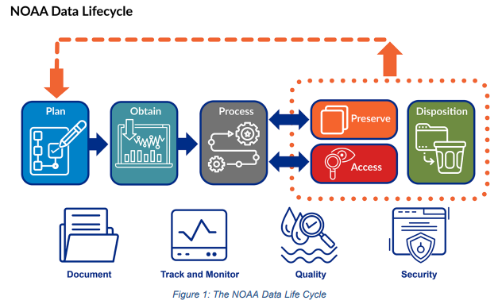
Need to plan for storage for each step in workflow.
You’ve done this before, but it can feel different or scary or intimidating when applied to digital files!
Don’t get caught in analysis paralysis!
Doing something is better than nothing!
Don’t let the perfect be the enemy of the good!
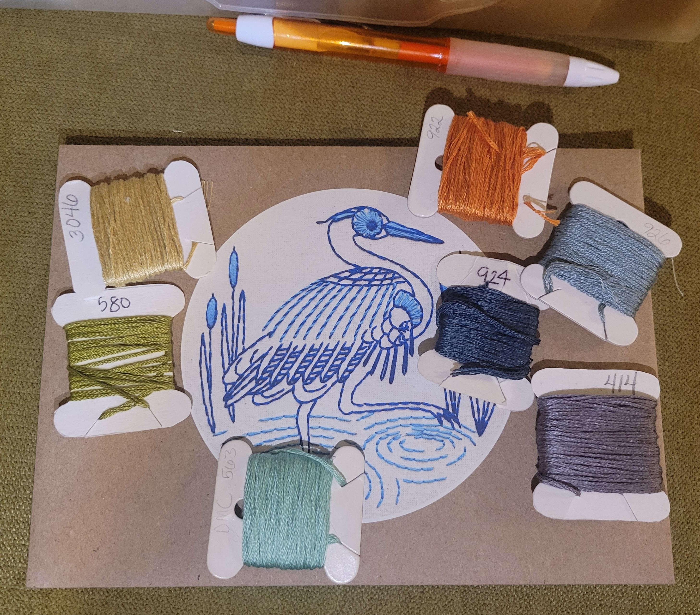
Sometimes, you need extra supplies.
Be intentional:
Why are there duplicates? Which is authoritative? Which are copies? How is it updated or retired?
It’s very easy to get overwhelmed.
Start with a minimal, repeatable structure
There are many options; here are two.
High variation year-to-year within the same project
species/
├── region_project_a/
│ ├── README.md
│ ├── 2023/
│ ├── 2025/
│ │ ├── 00_planning_sops/ (including everything related to fieldwork)
│ │ ├── 01_raw/
│ │ ├── 02_processed/
│ │ ├── 03_scripts/ (if not on GitHub)
│ │ ├── 04_outputs/ (with folders within for each output)
│ │ └── 05_docs/
│ └── 2026/
└── region_project_b/
├── README.md
├── 2018/
├── 2022/
└── 2026/Our files are not nearly this organized!
High consistency within years, irregular reporting intervals
species/
├── region_project_a/
│ ├── README.md
│ ├── 00_planning_sops/
│ ├── 01_data/
│ │ ├── 2023/
│ │ ├── 2025/
│ │ └── 2026/
│ ├── 02_scripts/ (if not on GitHub)
│ ├── 03_outputs/ (with folders within for each output)
│ └── 04_docs/
└── region_project_b/
├── README.md
├── 00_planning_sops/
├── 01_data/
│ ├── 2018/
│ ├── 2022/
│ └── 2026/
├── 02_scripts/ (if not on GitHub)
├── 03_outputs/ (with folders within for each output)
└── 04_docs/Our files are not nearly this organized!
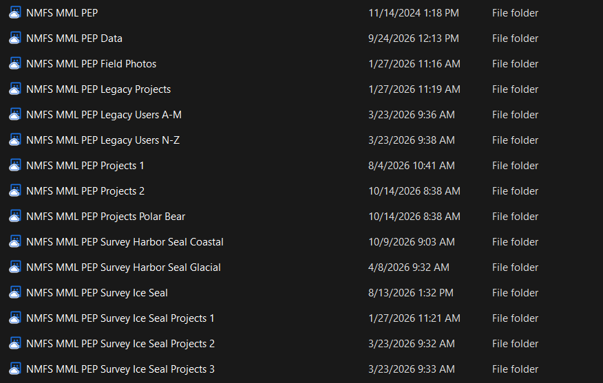
Projects
Information to support collecting the data
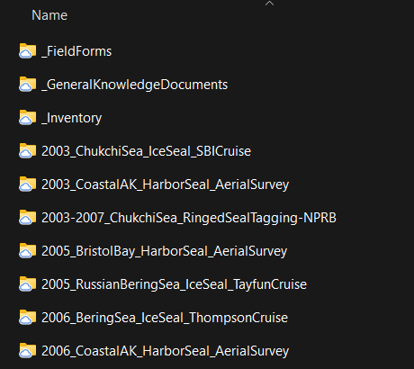
Data
Data collected and associated products
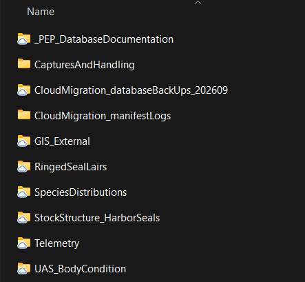
DISCUSSION: Which do you like better and why?
Year/project requires memory or knowledge.
Project/year keeps a project together. Easier to on-board.
Raw data are evidence—not a workspace.
Build workflows using “raw” data; store products elsewhere.
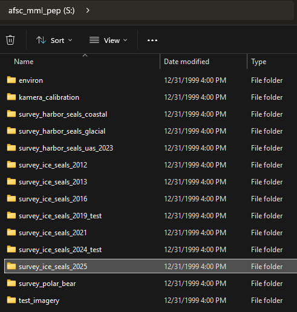
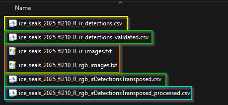
orange --> blue
raw --> processedClear guidance of file naming within project documentation
Don’t lock yourself into a rigid access scheme.
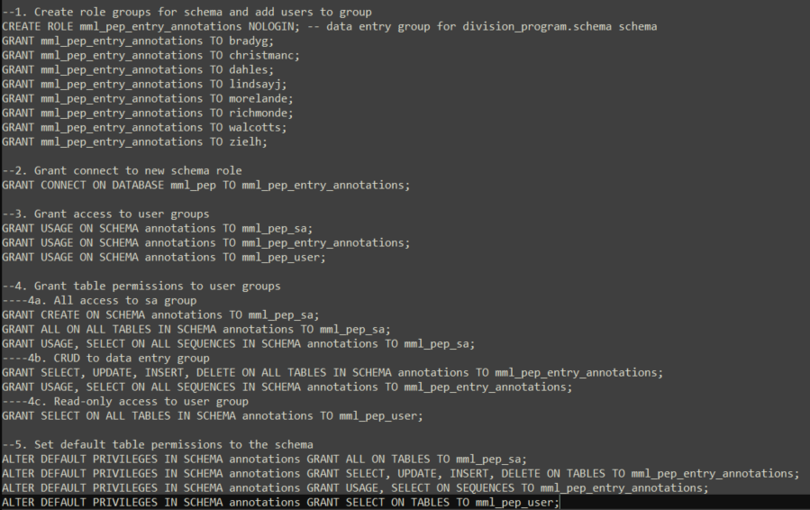
Where we store data is different than before. And how we access it is different than before.
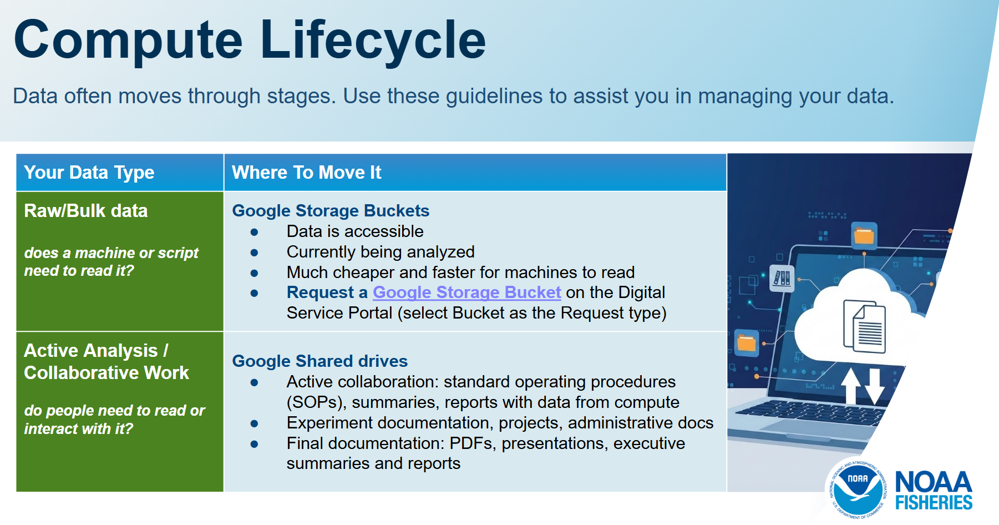
Need more explicit and clear guidance for what goes where
Both are useful, so design for both.
Keep the browseable home. Add another way to find things.
Currently, we have a 500k item limit on Google Shared Drives.
This is a hard limit, and you will get notice when you are approaching it.
Keep this in mind as you are (re)organizing your files and folders on Shared Drives.
| Folder | “What Do I Expect to Find Here?” |
|---|---|
01_raw/ |
Original inputs |
04_outputs/ |
Generated results |
misc/ |
Unclear |
final_final/ |
Unclear |
The best folder structure is one that people can follow
…when they’re busy.
…when they’re working under a tight deadline.
…when the data lead is on vacation!
Can also use this question to guide planning and discussion.
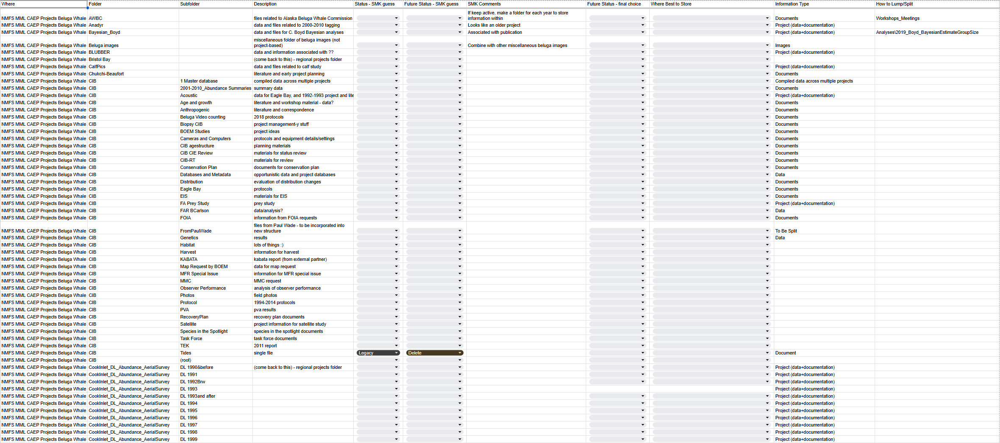
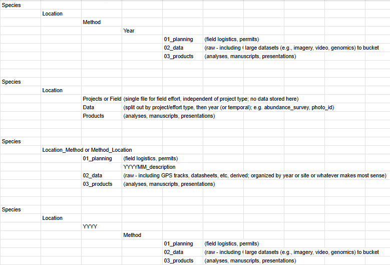
When ideas conflict, test the task—not just the preference.
It is hard to get it right the first time.
It took three tries to get the PEP data organization “right”.
And we had lots of meetings to get there!
Be patient with yourself and others as you work to improve your data management practices!
I literally bribed people with cookies to get them to help me organize the PEP data.
Do not require everyone to modernize everything at once.
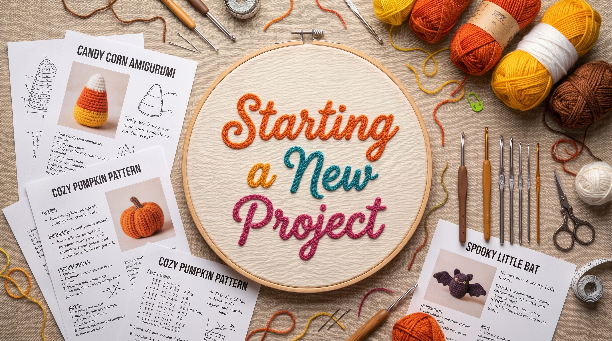
We’re going to make a candy corn amigurumi!
(or a new research effort, or an analysis or a data product)
Crafting: How am I going to complete all these holiday-related embroidery projects before I decorate for the holidays?
SOLUTION: an unexpected 43-day pause in October 2025
(not recommended as a planning strategy)
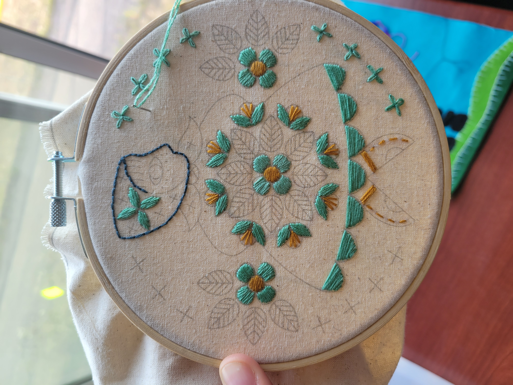
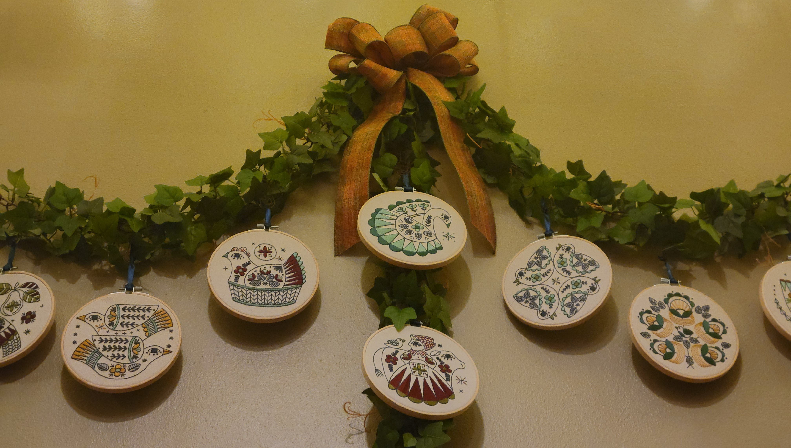
Research: How are we going to get all this work completed before the analysis deadline?
SOLUTION: GitHub Projects
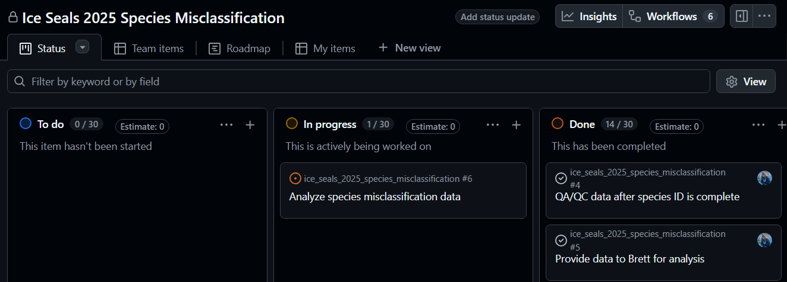
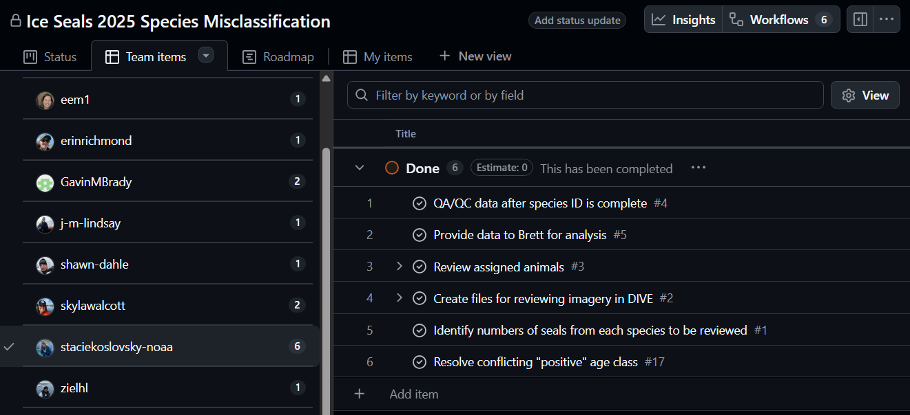
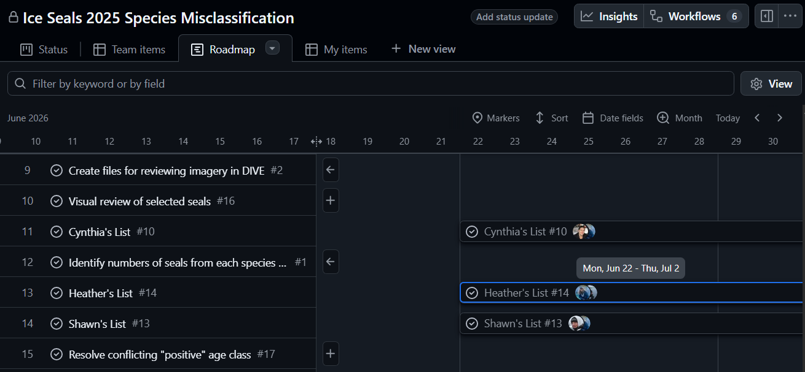
Project management helps set the tone for organizing and documenting your work, files, and data.
Takes time to write. Saves time when you need it later.
Instead of: data_final_v2_edit.csv
Try: harbor_seal_counts_1998-2024_20261028.csv
Agree on:
A file name should make sense on its own.
| Variable | Meaning | Unit or allowed values |
|---|---|---|
haulout_id |
Location identifier | Site lookup table |
altitude_m |
Aircraft altitude | Meters |
count_dt |
Survey date/time | YYYY-MM-DD HH:MM:SS |
count |
# seals counted | Nonnegative integer |
Other information might include:
Missing values, quality flags, identifiers, and relationships.
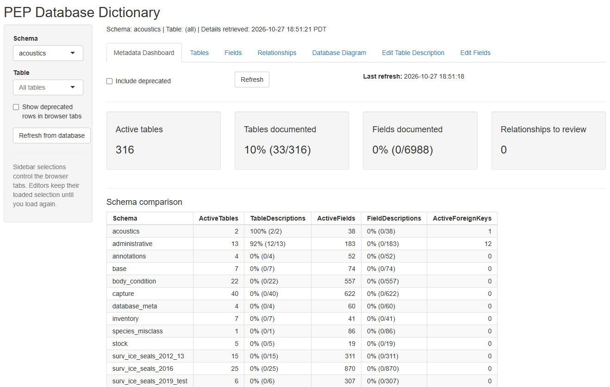
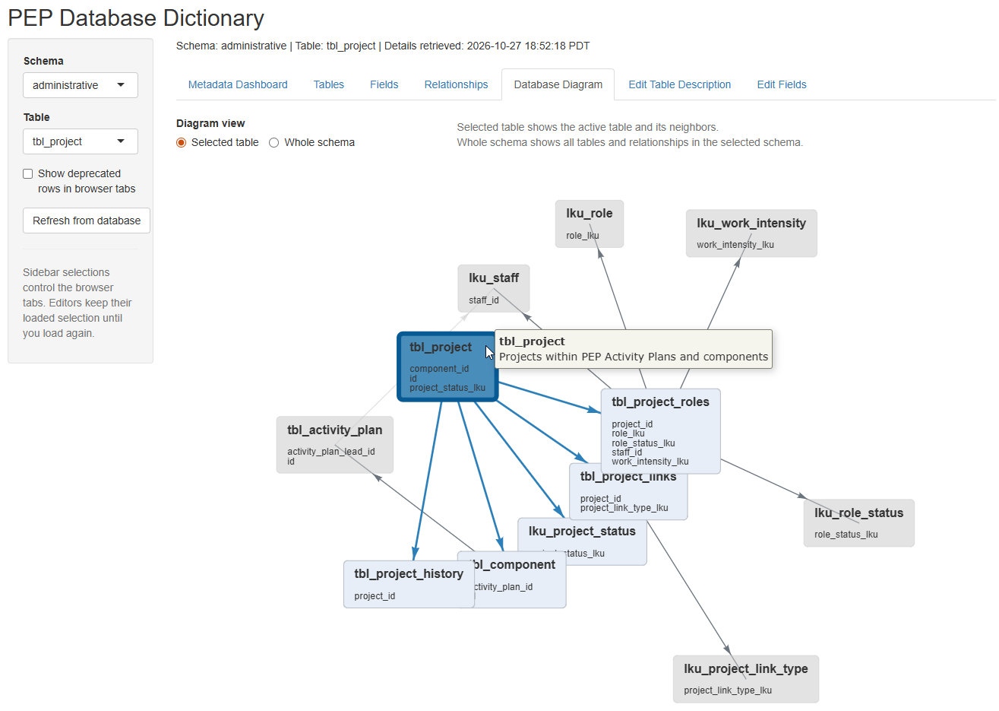
A useful README answers:
Write down what memory is currently supplying.
A README documents the contents.
The workflow/SOPs documents the process.
A pattern is incomplete without the hook size and gauge.
For an analysis or workflow, record:
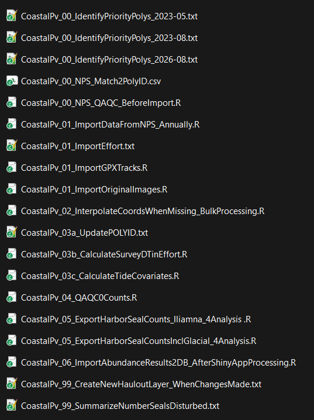
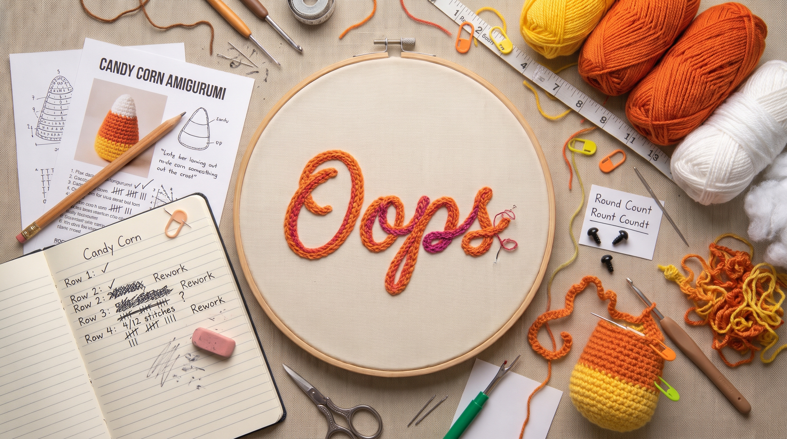
Use version history to answer:
Git is useful for code and text.
Data need an appropriate versioning strategy, too.
File naming? GitHub? Database tooling?
A half-finished project is not necessarily a problem.
A half-finished project with no consistency or notes is difficult to continue.
A project handoff should identify:
Choose a project you know.
Brainstorm:
Ask: “What would make the next stitch easier?”
DISCUSSION: Share one thing you wrote down.
Preservation
Maintenance at useful milestones:
Review:
Locations · Documentation · Access · Ownership · Recovery
A little regular care beats a large rescue effort later.
“Take a deep breath…and say ‘yeah, I can do that’”
~presenter at Posit::conf 2026
This is 10 years in the making. Be patient! (link to plan)
| Tangle | Solution |
|---|---|
| Finding things | Predictable organization |
| Knowing what to trust | Clear file naming |
| Understanding data | README and data dictionary |
| Recreating results | Versioning and history |
| Handing off the work | SOPs |
What would make the next stitch easier?
The Craft of Data Management